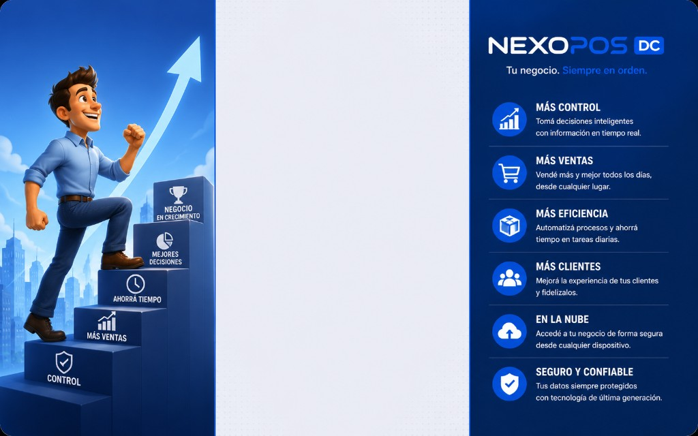
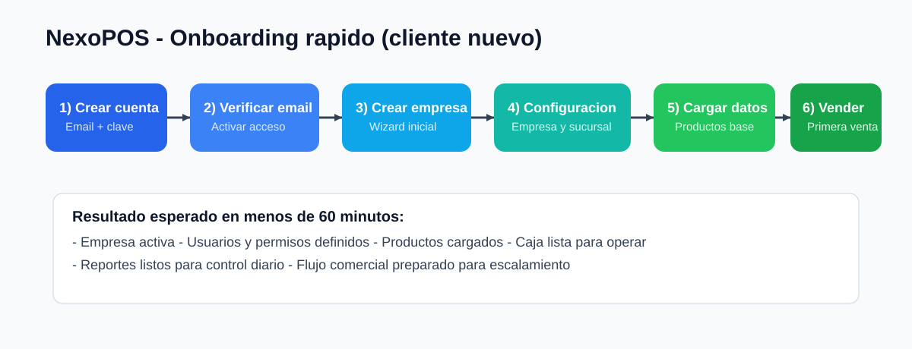
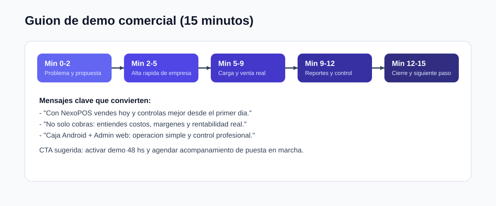

Guia comercial para clientes NexoPOS
Version orientada a cliente final, preventa y onboarding comercial.
Portada visual (marca)

1. Que es NexoPOS (explicado simple)
NexoPOS es un sistema para comercios que permite:
- vender rapido en mostrador;
- controlar stock y compras;
- registrar gastos y entender rentabilidad;
- administrar usuarios, sucursales y permisos;
- operar caja Android y panel administrador web en paralelo.
2. Como arrancar en 3 pasos
- Crear cuenta desde login.
- Verificar email y crear empresa.
- Ingresar al sistema y comenzar a cargar productos.
Tambien podes probar primero con demo de 48 hs.
3. Flujo de alta recomendado (implementacion rapida)

Tiempo objetivo: entre 30 y 60 minutos para dejar el negocio operativo.
4. Crear empresa (alta normal)
Paso a paso para cliente
- Entrar a
https://nexopos-dc.web.app/login.
- Click en Crear empresa.
- Completar email y clave.
- Confirmar correo.
- Crear empresa y completar datos iniciales.
- Entrar al panel administrador.
Recomendacion comercial
Acompanhar este paso en vivo durante la primera llamada para asegurar conversion y activacion.
5. Crear demo de 48 horas (alta comercial)
Paso a paso para demo
- Desde login, click en Probar demo gratis (48 hs).
- Registrar cuenta.
- Verificar correo.
- Confirmar creacion de empresa demo.
- Recorrer modulos clave.
Objetivo de la demo
- que el cliente vea valor operativo real;
- que pruebe una venta completa;
- que valide reportes y control de costos.
6. Ingreso correcto al sistema
En login hay dos modos:
- Administrador: abre el panel web completo.
- Cajero: abre mostrador/caja.
Si el usuario no tiene rol admin, el sistema evita el acceso administrativo y lo dirige al modo cajero.
7. Que funciones mostrar en una demo (orden sugerido)
- Dashboard (vision general).
- Productos (alta simple).
- Ventas / Caja (operacion real).
- Compras e Inventario.
- Finanzas (gastos + impacto en costos).
- Reportes (ventas, compras, ganancias).
- Usuarios y permisos.
- Configuracion de empresa/sucursales.
8. Guion comercial de 15 minutos (listo para usar)

9. Diferencial comercial que conviene remarcar
- Demo 48 hs lista para uso real.
- Caja Android para operacion de mostrador.
- Admin web para control completo.
- Gestion de gastos integrada al analisis de costos.
- Estructura multi-tenant pensada para escalar.
- Modelo de planes por modulos + usuarios.
10. Caja Android (mensaje simple para cliente)
Descargar app
- URL fija:
https://nexopos-dc.web.app/app-caja.apk
Actualizar app
- Desde el boton Actualizar en caja.
- El sistema compara version instalada vs version publicada.
- Solo descarga si hay una nueva.
Soporte remoto
- Desde login: boton Soporte remoto (TeamViewer).
11. Preguntas frecuentes para ventas y soporte
"No se por donde empezar"
Usar onboarding rapido: empresa -> productos -> primera venta -> reportes.
"Puedo probar antes de contratar?"
Si, con demo de 48 horas.
"Necesito usar tablet en mostrador y admin aparte"
Si: caja en APK Android y administracion en web.
"Puedo limitar usuarios?"
Si, la plataforma contempla cupos por plan y control de sesiones.
12. Checklist de cierre comercial
- Cliente creo cuenta o demo.
- Verifico email.
- Creo empresa.
- Realizo primera venta.
- Vio al menos un reporte.
- Entendio plan recomendado.
- Quedo acordado siguiente paso (alta paga o capacitacion).
13. Material para completar con capturas reales (recomendado)
Para que este manual quede listo para envio final a clientes, conviene agregar capturas propias de:
- Pantalla de login.
- Flujo crear empresa.
- Wizard inicial.
- Pantalla de cajero en tablet horizontal.
- Reporte de ventas.
- Pantalla de gastos y precio sugerido.
Sugerencia: guardar esas imagenes en docs/media/capturas/ y referenciarlas en esta guia.
Si queres, en el siguiente paso te dejo una version PDF comercial (misma estructura, mas limpia para compartir por WhatsApp o mail).